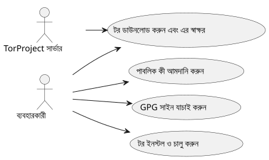
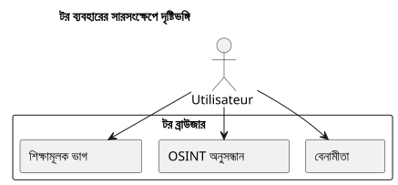

Tor Browserインস্টল করুন এবং যাচাই করুন উবুন্টু-এ
প্রকাশিত: 05 October 2025
ভূমিকা
একটি বিশ্বে যেখানে ডিজিটাল গোপনীয়তা দিন দিন বেশি হুমকির মুখে পড়ছে, Tor Browser একজন জরুরী সরঞ্জাম যা আপনার অজ্ঞাততা এবং তথ্য স্বাধীনতা বজায় রাখতে সহায়ক। তবু, কোনো ডাউনলোড করা সফটওয়্যারকে যাচাই না করেই চালাওয়া অত্যন্ত গুরুত্বপূর্ণ নয়তার সত্যতা যাচাইকৃত. এই নিবন্ধটি একটি সম্পূর্ণ পদ্ধতি উপস্থাপন করে:
-
ডাউনলোড Tor Browser এবং এর স্বাক্ষর`.asc`
-
ডাউনলোড করা ফাইলের বৈধতা যাচাই করুন
-
ইনস্টল করুন এবং Tor Browser চালু করুন উবুন্টু-এ
-
এটিকে ডeskটপ মেনুতে যোগ করুন দৈনন্দিন ব্যবহারের জন্য
-
শিক্ষামূলক সংস্থান ও নৈতিক OSINT টর এর মাধ্যমে অন্বেষণ করুন
টর ও তার সিগনেচার ডাউনলোড
টর ব্রাউজার জন্য একটি বিশেষ ফোল্ডার তৈরি করুন :
mkdir -p ~/workspace/tipiak/tor
cd ~/workspace/tipiak/torতারপর টর ব্রাউজারের আর্কাইভ এবং এর স্বাক্ষর ডাউনলোড করুন:
wget https://www.torproject.org/dist/torbrowser/14.5.7/tor-browser-linux-x86_64-14.5.7.tar.xz
wget https://www.torproject.org/dist/torbrowser/14.5.7/tor-browser-linux-x86_64-14.5.7.tar.xz.ascসাইনিংয়ের কৃপ্টোগ্রাফিক যাচাই
এই ধাপটিঅপরিহার্যডাউনলোড করা ফাইলটি Tor Project থেকে আসছে এবং পরিবর্তিত না হয়েছে তা নিশ্চিত করতে।
টর প্রজেক্টের পাবলিক কী ইম্পোর্ট করুন
gpg --auto-key-locate nodefault,wkd --locate-keys torbrowser@torproject.orgনিশ্চিত করুন যে কীটি সঠিকভাবে আমদানি করা হয়েছে:
gpg --list-keys torbrowser@torproject.org2. স্বাক্ষর যাচাই করুন
gpg --verify tor-browser-linux-x86_64-14.5.7.tar.xz.asc tor-browser-linux-x86_64-14.5.7.tar.xz�যদি সব কিছু ঠিক থাকে, তাহলে নিম্নলিখিত বার্তাটি প্রদর্শিত হবে :
gpg: Good signature from "Tor Browser Developers (signing key)"অপ্রমাণিত কীর সতর্কতায়, এটি শুধুই মানে যে আপনি এখনও টর প্রকল্পের বিশ্বাসনীয় কীটি স্বাক্ষর করেননি, কিন্তু স্বাক্ষরটি এখনও বৈধ থাকে।
বাস্তব উদাহরণ : বৈধ স্বাক্ষর কিন্তু অসংযোজিত কী
এই যাচাইয়ের সময় এই ধরনের বার্তা পেলে স্বাভাবিক:
gpg --verify tor-browser-linux-x86_64-14.5.7.tar.xz.asc tor-browser-linux-x86_64-14.5.7.tar.xz
gpg: Signature faite le mar. 16 sept. 2025 14:26:26 CEST
gpg: avec la clef RSA CAAE408AEBE2288E96FC5D5E157432CF78A65729
gpg: Bonne signature de « Tor Browser Developers (signing key) <torbrowser@torproject.org> » [inconnu]
gpg: Attention : cette clef n'est pas certifiée avec une signature de confiance.
gpg: Rien n'indique que la signature appartient à son propriétaire.
Empreinte de clef principale : EF6E 286D DA85 EA2A 4BA7 DE68 4E2C 6E87 9329 8290
Empreinte de la sous-clef : CAAE 408A EBE2 288E 96FC 5D5E 1574 32CF 78A6 5729এই বার্তা নির্দেশ করে যে স্বাক্ষরটি প্রযুক্তিগতভাবে "সঠিক" (ফাইলটি পরিবর্তিত হয়নি), কিন্তু আপনার GPG সিস্টেম প্রমাণিত করা বিশ্বাস করতে পারে না কী নিজেই। এই শঙ্কা দূর করতে, মূল কী-এর ফিঙ্গারপ্রিন্ট তুলনা করা অপরিহার্য। (EF6E 286D DA85 EA2A 4BA7 DE68 4E2C 6E87 9329 8290) টর প্রকল্পের অফিসিয়াল ওয়েবসাইটে প্রকাশিতটির সাথে
সরকারী সাইট অনুযায়ী, প্রত্যাশিত ফুটপ্রিন্ট :`EF6E286DDA85EA2A4BA7DE684E2C6E8793298290`.
যেহেতু প্রদর্শিত চাপ`gpg`যদি ফিং প্রিন্ট অফিসিয়াল সাইটের সাথে সঠিকভাবে মেলে, আপনি নিশ্চয় হতে পারেন যে কীটি বৈধ এবং ফাইলটি নিরাপদ। "অনিপন্নকৃত কী" cảnhব্য তখন আপনার স্থানীয় GPG কনফিগারেশনের তথ্য, স্বাক্ষরের বৈধতা বা ফাইলের প্রামাণিকতার নয়।
কেন হস্তাক্ষর যাচাই করা উচিত?
GPG সাইন যাচাইকরণ ডিজিটাল নিরাপত্তার একটি মৌলিক কর্ম। অনুমতি দেয় :
-
গারান্টি দেওয়াপ্রামাণিকতাডাউনলোড করা সফটওয়্যারের
-
একটি ক্ষতিগ্রস্ত ফাইলের ইনস্টলেশন প্রতিরোধ করা
-
অংশগ্রহণ করাডিজিটাল সোভারিগনিটিব্যক্তিগত
-
দায়ী এবং নৈতিক ডিজিটাল সংস্কৃতিকে উন্নয়ন করা

Tor Browser-এর নিষ্কাশন ও চালু
ডাউনলোড করা আর্কাইবটি বিস্তার করুন :
tar -xvf tor-browser-linux-x86_64-14.5.7.tar.xz
cd tor-browserতারপর ব্রাউজার চালু করুন :
./start-tor-browser.desktopপ্রথম চালু করার সময়, Tor নেটওয়ার্কের সাথে সংযোগ স্থাপনের জন্য একটি কনফিগারেশন উইন্ডো খুলবে।
উবুন্টু ডেস্কটপে একীকরণ
অ্যাপ্লিকেশন মেনুতে Tor Browser যোগ করার জন্য:
./start-tor-browser.desktop --register-appআপনি তারপর :
-
অ্যাপ্লিকেশন মেনু থেকে Tor Browser চালু করুন
-
ডকে পছন্দের তালিকায় যোগ করুন
-
যদি চান তবে একটি কীবোর্ড শর্টকাট তৈরি করুন

Tor দিয়ে শিক্ষামূলক সংস্থান অন্বেষণ করুন
Tor শুধুমাত্র একটি গোপনীয়তা সরঞ্জাম নয়। এটি শিক্ষা ও গবেষণা সম্পদের একটি প্রবেশদ্বার, বিশেষত নিম্নলিখিত ক্ষেত্রে :
-
OSINT (খোলা উত্স গুপ্তিমার)
-
শিক্ষামূলক ও ওপেন সোর্স ভাগ
-
https://archive.org(Tor-এর মাধ্যমে অ্যাক্সেস, আরও গোপনীয়তার জন্য)
-
https://github.com/(টোরের মাধ্যমে পরামর্শযোগ্য)
-
https://librarygenesis.pro(মুক্ত বৈজ্ঞানিক সাহিত্যের অ্যাক্সেস)
-
জ্ঞানের প্রচার এবং ডিজিটাল সমাজে মানব বোঝাপড়া
-
ডিজিটাল সংস্কৃতি, আবীক্ষার স্বাধীনতা এবং জ্ঞান অ্যাক্সেসের বিষয়ে সম্পদ
-
সাইবার নিরাপত্তা ও প্রযুক্তির নৈতিকতার বিষয়ে মুক্ত দস্তনেজ
টোর ব্রাউজার আপডেট
সর্বোত্তম নিরাপত্তা নিশ্চিত করতে, Tor Browser-কে আপডেট রাখা অতি গুরুত্বপূর্ণ। ব্রাউজারে একটি স্বয়ংক্রিয় আপডেট মেকানিজম অন্তর্ভুক্ত রয়েছে যা কমান্ড লাইন থেকে ট্রিগার করা যায়।
Tor Browser এর ইনস্টলেশন ডিরেক্টরি থেকে, শুধুমাত্র স্টার্ট স্ক্রিপ্টটি পুনরায় চালু করলেই হবে :
cd ~/workspace/tipiak/tor/tor-browser
./start-tor-browser.desktopশুরু করার সময়, Tor Browser স্বয়ংক্রিয়ভাবে নতুন সংস্করণ আছে কি না তা পরীক্ষা করবে। যদি নতুন সংস্করণ থাকে, তাহলে এটি আপনার জন্য স্বয়ংক্রিয়ভাবে ডাউনলোড এবং ইনস্টল করবে।
এই সরল পদ্ধতি নিশ্চিত করে যে আপনি সর্বদা সর্বনতুন নিরাপত্তা প্যাচ এবং সর্বশেষ উন্নয়ন পান, যা নিরাপদ ব্রাউজিংয়ের জন্য অপরিহার্য।
উপসংহার
ডাউনলোডগুলি যাচাই করা কোনো নিরাপদ ডিজিটাল পরিবেশে উন্নত হতে চাওয়া যে কোনো ব্যক্তির জন্য একটি জরুরি প্রতিক্রিয়া। Tor-কে যাচাইকৃতভাবে ইনস্টল করা, এটিতার ডিজিটাল অখণ্ডতা রক্ষা করা, মুক্ত সফটওয়ারে বিশ্বাস সংরক্ষণ করা, et তার তথ্য স্বায়ত্তশক্তি বাড়ানো.
ডিজিটাল নিরাপত্তা একটি বোধের আচরণ, প্যারানোয়িয়া নয়।

সন্দर्भ
-
টর প্রকল্পের অফিশিয়াল সাইট :https://www.torproject.org/download/[https://www.torproject.org/download/]
-
সিগনিচার যাচাইয়ের ডকুমেন্টেশন :https://support.torproject.org/tbb/how-to-verify-signature/[https://support.torproject.org/tbb/how-to-verify-signature/]
-
ডকুমেন্টেশন Ubuntu :https://ubuntu.com[https://ubuntu.com]
-
শিক্ষামূলক আর্কাইভ :https://archive.org/details/opensource[https://archive.org/details/opensource]
|
এই নিবন্ধটি সুরক্ষা এবং ডিজিটাল সচেতনতা সিরির অংশ, ব্যবহারশীল ও শিক্ষামূলক পদ্ধতিগুলো প্রোৎসাহিত করা লক্ষ্যে মুক্ত টুলসের পাশে |